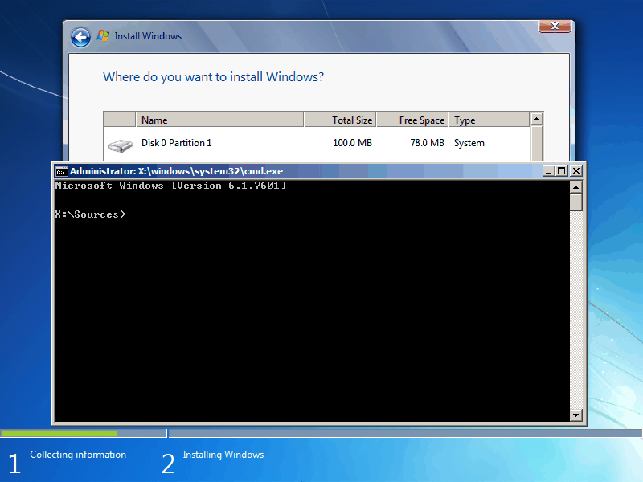
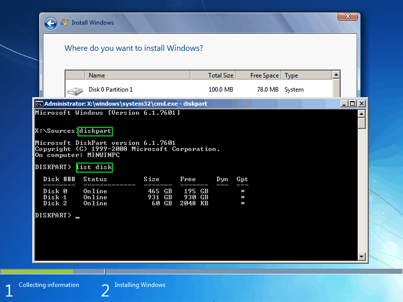
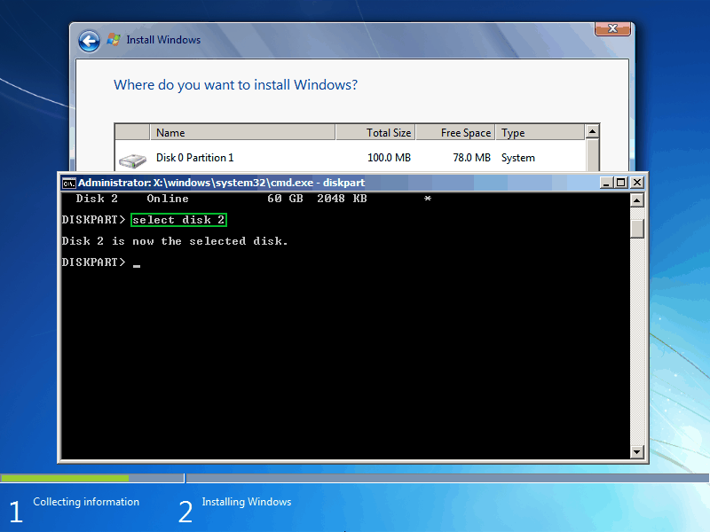

Введение в шифрование
Все наверняка слышали про шифрование и безопасность как самого ПК так и съемных носителей.
Я лишь кратко упомяну основные пункты:
- Данные шифруются, чтобы ограничить к ним доступ по паролю. Допустим у нас есть текстовый файл с паролями, и если его кто-то получит(вытащит ли вирусом или физически придёт скопирует), то все пароли окажутся у него в руках. Но если зашифровать файл, то без ключа шифрования данные просто превращаются в набор байт.
- При использовании надёжных алгоритмов, таких как AES, если пароль длиннее 15 символов, то вероятность, что его удастся подобрать хотя бы за 100 лет равна практически нулю.
- Шифровать можно не только отдельные файлы, но и диск целиком.
Утилиты для шифрования
Bitlocker
Штатный софт Windows, шифрует хорошо, в целом все очень просто, работать с ним одно удовольствие: нажал одну кнопку и файл зашифровался.
Но у этой медали есть оборотная сторона – ключ дешифровки хранится на серверах Microsoft. Они легко выдадут ключ дешифратора по первому требования при возникновении каких-либо проблем.
True Crypt
Разработчики закрыли проект, он больше не поддерживается. Его можно использовать только если с Veracrypt проблемы
Veracrypt
Актуальное решение с открытым программным кодом. Они неплохо взлетели после закрытия трукрипта, у них почти точно такой же интерфейс и функционал аналогичный.
Что лучше шифровать
Шифрования много не бывает. Не важно, какого рода данные, рабочие ли это файлы либо фотографии голой жены. Есть пк - зашифруй! Есть флешка - зашифруй! Вспомните фильм ДухLess. Помните под конец фильма, девчулька спёрла флэшку у Белкина? И потом благодаря этой информации показывали сотрудников и сам Белкин остался без козыря. Да понимаю, фильм. Но все же, если бы флешка была бы зашифрована, понимаете в какое место можно было бы ее засунуть? Правильно, в задний проход.
Помимо кинематографа, я приведу реальный пример. Есть один знакомый, моего знакомого, который знает этого знакомого. В общем, гражданин работал в сфере отмывания денег, много чего творил. Все у него было неплохо относительно. Одним чудным и солнечным днем, он полетел в одну азиатскую страну для очередной делюги. Ситуация там сложилась не в его пользу и его задержали. Его осудили на 18 месяцев и изъяли ноутбук. Суть в том, что посадили его за одно преступление, а если открыть ноутбук, то там уже на серьёзный срок наберётся. В ноутбуке доказательная база для заключения минимум еще на 7 лет. Но он был зашифрован.
Они эти все 18 месяцев брутили пароль, но ничего не забрутили. Срок подошел к концу, он улетел а ноутбук остался пылится в вещдоках, до сих пор зашифрованный.
Мораль? - когда не знаешь к чему готовиться, готовься ко всему.
Отвечаю на вопрос выше о том, что лучше шифровать. Шифровать лучше всё, приватность выше удобства стоит. Тут есть только одна оговорка: если теряется ключ к зашифрованному диску, то ничего сам от туда не достанешь. Пусть у тебя там хоть 1000 биткоинов лежит; нет ключа – нет информации. И в случае поломок носителя восстановление затрудняется. Поэтому не надо прямо сейчас пытаться зашифровать все данные, особенно важные. Надо быть готовым, что первые попытки шифрования съедят данные.
Для шифрования большого объёма данных используются блочные алгоритмы. Это значит, что данные разбиваются на блоки фиксированной длины, каждый из которых шифруется отдельно. Блоки существуют независимо друг от друга, и внутри блока все биты важны. Плюс такого подхода – можно быстро расшифровать любой произвольный файл, а минус – если в блоке повредится хотя бы один бит, то весь блок невозможно будет расшифровать.
Появление недоступных битов – ситуация не редкая ни для hdd, ни для ssd. А при шифровании вероятность из-за ошибки потерять важные данные выше в разы, поэтому всегда имейте копию всего самого важного. Желательно на зашифрованной флешке. Запомните, иногда из-за ошибок шифрования пропадают или портятся данные, не шифруйте что-то очень важное, что есть только в одном экземппляре.
Виды шифрования
Полное шифрование жёсткого диска
Оно возможно. Причём не только внешнего диска, а прям раздел с windows весь зашифровать можно. Тогда в систему устанавливается загрузчик veracrypt, который при запуске запросит пароль до запуска самой системы. Таким же образом он будет работать при полном шифровании, при котором шифруются любые данные на диске. Это нужно для того, чтобы быть уверенным, что ничего из зашифрованной системы достать не получиться. Если шифруется несистемный диск, то в результате работы некоторых программ данные могут попасть на системный раздел. Это может быть кэш, миниатюра изображения. Например, winrar при распаковке файлов для запуска программы внутри архива(да и не только программы, при попытке открыть любой файл) распаковывает весь архив во временное хранилище, которое находится на системном диске. То есть системный раздел шифровать надо, даже если все нужные для работы файлы будут храниться не там.
Криптоконтейнер
Представим сейф, в котором лежат какие либо вещи, но сейф защищен паролем и спрятан в стене за картиной. Только зная, где находится сейф и зная пароль, можно достать что-либо из сейфа. Криптоконтейнер по сути тоже самое, только в компьютерной среде.
У криптоконтейнера есть несколько важных особенностей:
- Его размер устанавливается на этапе создания. Это нужно и для алгоритма шифрования, и для того, чтобы по размеру невозможно было предположить, что в нём лежит.
- Криптоконтейнер в системе выглядит как обычный файл с любым расширением. Но внутри зашифрованные данные, прочитать которые можно только по паролю.
И пару слов о работе самого veracrypt: он шифрует данные на лету. Это значит, что после ввода пароля он не создаёт расшифрованную копию файла где-то на диске(это небезопасно), а расшифровывает данные по мере их необходимости в оперативной памяти. После ввода пароль тоже хранится в оперативной памяти. А это значит, что расшифрованные данные можно безопасно демонтировать экстренным выключением. После выключения питания компьютера расшифрованная версия файлов исчезает. Этого же можно достичь при размонтировании криптоконтейнера. Но лучше выключать windows обычным способом, когда это возможно. Потому что резкое выключение может повредить данные открытых программ(и шифрование тут не причём).
А так же, если используются зашифрованные данные в какой-то программе на машине с не зашифрованной системой, эта программа может держать у себя временные файлы. Экстренное выключение не даст возможность программе очистить записи за собой, поэтому в системе может что-то остаться. Это ещё один повод шифровать весь диск полностью.
Восстановление данных при форс-мажорах
При полном шифровании диска или шифровании системного раздела veracrypt предлогает создать диск восстановления. Важно понимать, что это такое и зачем он нужен, ведь именно он поможет, если что-то пойдёт не так. Вот пару тезисов о нём: 1) Он не хранит данные о пароле, которым было выполнено шифрование 2) На нём содержится мастер-ключ шифрования, если диска нет, и такие данные как соль и мастер-ключ не были сохранены вручную, то восстановление невозможно. То есть для восстановления системы нужен будет и диск шифрования для конкретного раздела, и пароль шифрования. Если вы его забудете пароль, то можно смело переустанавливать систему, старые данные уже не вернуть. Поэтому чтобы не потерять самые важные данные, создайте их копию себе где-нибудь. На первое время не страшно, если она будет на обычной флешке и будет незашифрованная. Шифрование, это момент, где от недостатка опыта может не получиться с первой попытки.
На следующем занятии будет практика, которой предшествует тест. К практике можно подготовиться заранее
-
Скачайте veracrypt с официального сайта
К слову, любое ПО - необходимо скачивать только с официальных сайтов. После закрытия ТруКрипт, был создан ресурс под названием www.truecrypt-russia.com По-моему домен был таким, скачало софт более 10000 человек. А самое интересное, что в данном софте был уже встроенный бэкдор и мошенники уже делали свои грязные делишки. -
Подготовьте 2 флешки. Одна нужна будет для создания диска восстановления, на второй создадим криптоконтейнер. Диск восстановления можно сделать и на обычном cd/dvd диске.
-
Те, кто будет переустанавливать систему, сделайте это сейчас. Из соображений безопасности лучше всего использовать windows 7 в работе. Но при установке системы установите тип загрузчика mbr по инструкции ниже
Для настройки windows на безопасность лучше всего подходит 7 версия - windows 7. И важно использовать оригинальную систему без кейгенов и прочего треша, чтобы не подхватить вирус. Найти iso windows 7 нетрудно, можно хоть с торента скачать. Найти можно по запросу windows 7 sp1 untouched. При установке попросит активационный код, его можно в интернете найти. Официально активироваться не получится с ним, но windows хорошо работает и по истечению 30 дневного срока.
Изменение типа загрузчика при установке
Этот шаг для тех, кто переустанавливает систему. При переустановке windows желательно поменять тип загрузчика на MBR. Он лучше поддерживается веракриптом и с ним практически не бывает проблем при шифровании всего диска.
После запуска с установочного диска первым делом зажимаем комбинацию Shift + F10. Должна появиться командная строка

Вводим туда команду diskpart. После выводим список дисков list disk

Из списка дисков выбираем, какой сделать системным. Пишем select disk X, где X - номер диска.

После выполняем clean.
Затем convert mbr.
По окончанию консоль можно закрыть и произвести установку системы.
Оригинал
Youtube видео если что-то не получается